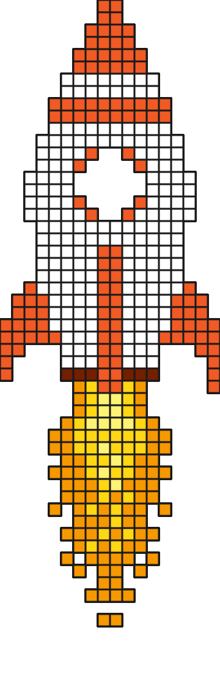
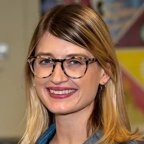
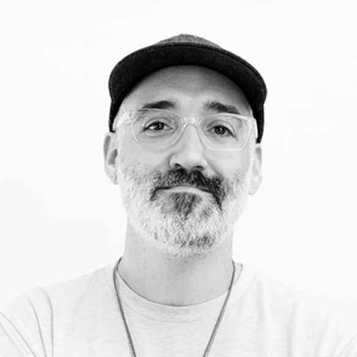
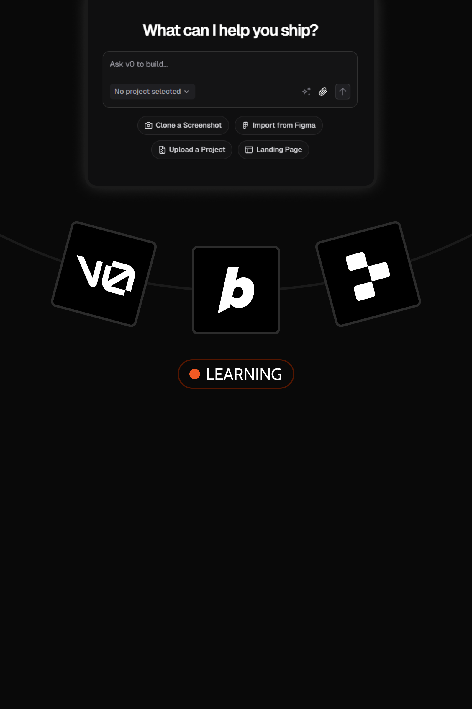
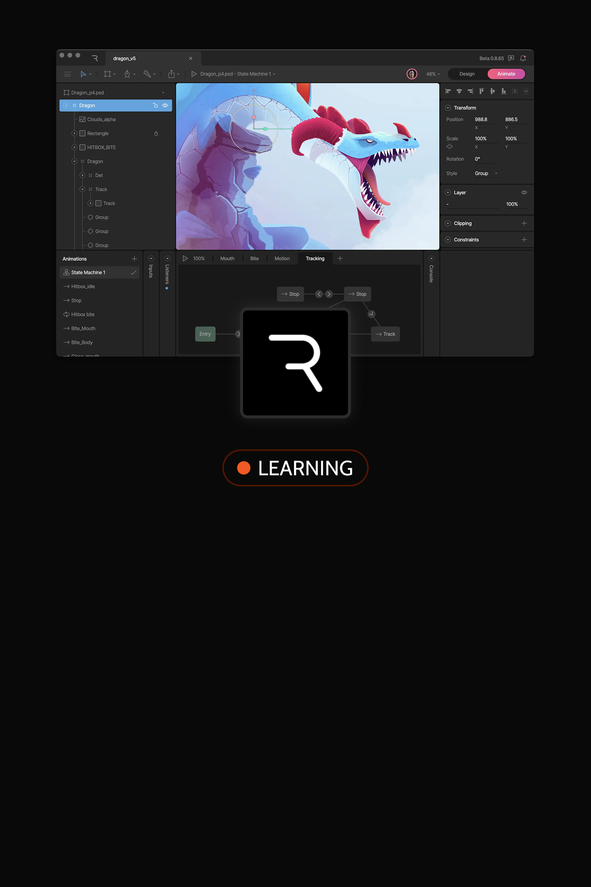
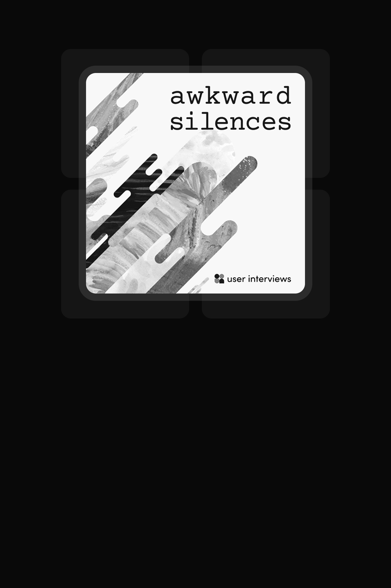

2025
Boston Bioprocess
Founding Product Designer
2025
Featurely AI (Stealth)
Product Designer
2024
Toyota Mobility Foundation
Product Designer
2023
IU Redlab
Product Designer (UX Lead)
2022
Indiana University
UX Researcher / GRA
2020
Indesign Elements Studio
Design Intern
Boston Bioprocess · Yanta
Designed an AI assistant that turns scientists' plain-language questions into charts and SQL they can check before saving.
V0 testing – 87.5/100 on UX-Lite
Boston Bioprocess · Yanta
Turned messy instrument exports into one-step uploads: AI reads the file, the scientist checks the graph before saving.
V1 testing – 91.7/100 on UX-Lite
Boston Bioprocess · Yanta
Gave a lab product its name and mark, its public face, and the design system that carries both into code, in one year.
Shipped in three weeks: 280+ component variants
Boston Bioprocess · Yanta
Replaced scattered planning spreadsheets with one scheduler where the plan becomes the batch record, traceable to audit.
V1 testing – 93.8/100 on UX-Lite
Here’s what my supervisors, mentors, and colleagues have to say about me

…Building Yanta was a true 0-to-1 effort. Anamitra owned the entire product experience… he also stepped well beyond product design… setting the visual direction for our marketing materials and our LinkedIn presence. … I watched him grow from intern to the person we relied on for design decisions across the company.
 Michael TaiCo-founder and CEO
Michael TaiCo-founder and CEO…he designed foundational elements ranging from the underlying design system to critical modules including AI assistant, scheduler, data transformer, invoicing… What truly sets him apart is his rare ability to translate incredibly complex scientific workflows into intuitive digital products.
 Ted NetlandChief Financial Officer
Ted NetlandChief Financial Officer…He consistently adapted his design patterns to fit strict engineering constraints without sacrificing the user experience. This pragmatic, engineering-friendly approach was directly responsible for ensuring major features, like our highly successful bioprocess Scheduler, were shipped efficiently and on time.
 Anupam ChowdhuryHead of Data Science and Software Engineering
Anupam ChowdhuryHead of Data Science and Software Engineering…Anamitra never just took a spec and made it look good. He questioned things before building anything: who is this for, what problem does it solve, is there a simpler way? That mindset is rare and very much needed today, and it made him a true partner to our engineering team, not just a designer handing off mockups.
 Vinit Vasant KhatavkarSenior Software Engineer
Vinit Vasant KhatavkarSenior Software Engineer…Anamitra is one of the most talented and hardworking designers I’ve worked with. Over a year of building Yanta together, I saw him turn complex scientific workflows into designs that feel simple. He has strong ideas of his own. He questions requirements, argues for the user, then commits fully once the team decides.
 Nanguan LinSoftware Development Engineer
Nanguan LinSoftware Development EngineerAnamitra has demonstrated a strong understanding of user-centered design principles and techniques. When our team faced challenging situations, Anamitra exhibited excellent problem-solving skills and a positive attitude. I enjoyed working alongside Anamitra and learned a lot from their creativity, attention to detail, and ability to communicate effectively within our team.
Anamitra’s strengths lie in his work ethic, innovation, and ability to connect with clients and coworkers. In this project, which involved a multidisciplinary team, Anamitra was a valued member and contributed heavily with his design, human-machine interaction (HMI), and data analytics expertise.
Anamitra demonstrated excellent technical skills in the field of UX research and design and is an effective team member in a multidisciplinary team setting. Anamitra and his team delivered beyond the project requirements, bringing their ideas to life through rigorous testing and validation.
I highly recommend Anamitra for his exceptional ability to conduct in-depth explorative research. His work has provided comprehensive insights that have been invaluable in informing and improving our approaches to addressing food insecurity and, in turn, serving those in need more effectively.

Olivia StewartClient · Director, Westminster Pantry (WNS)Anamitra displayed strong communication and problem-solving skills. His eagerness to learn and openness to feedback were impressive.

Carl DeCaireHead of Product & Design, Step FinanceTo discover the latest experiments, experiences, and stories that are fueling my creativity and growth.

Lately, I’ve been experimenting with some generative UI tools. You might’ve caught a few of the experiments already!

Started exploring Rive recently—can’t wait to make my prototypes way more interactive (and fun)!

Love podcasts! Recently discovered Awkward Silences—real insights and experiences from researchers, ops, and product designers.


Copyright © 2025 Anamitra Jana